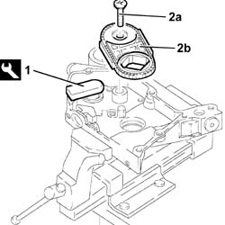
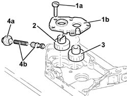
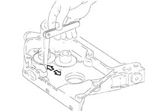
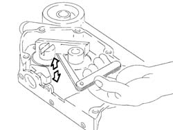
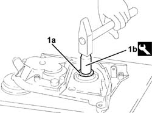
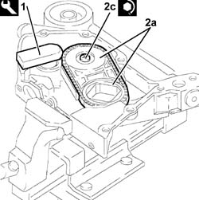

1084B18 Engine oil pump, removed - Check at the bench
- Path
- Procedures > 10 ENGINE > 1084 ENGINE LUBRICATION > 1084B ENGINE OIL LUBRICATION CIRCUIT > 1084B18 Engine oil pump, removed - Check at the bench
- Kind
- repair procedure (removal / refitting; the operation number is the code)
- Applies to
- engines: 2.4 JTD 10V; all production periods
- Interactive page
- https://sloeber94.github.io/elrnDB-lThss/en/#/498147
Applies to: engines: 2.4 JTD 10V; all production periods
 Removing
Removing
 Refitting
Refitting- Position the engine oil pump in the vice fitted with protective jaws.
1. Fit the tool.
 | Description | Code | Function |
|---|---|---|---|
1 | Counter-torque/Template | 1.870.799.000 | Oil pump timing |
2. Undo the bolt (2a) and remove the oil pump drive chain assembly (2b).
- Remove the tool.
| Description | Code | Function |
|---|---|---|---|
. | Counter-torque/Template | 1.870.799.000 | Oil pump timing |

Applies to: engines: 2.4 JTD 10V; all production periods
1. Undo bolts (1a) and remove the oil pump cover (1b).
2. Remove the driven gear.
3. Remove the drive gear.
4. Undo the cap (4a) and release the oil pressure relief valve (4b).
- Remove the crankshaft front oil seal

Applies to: engines: 2.4 JTD 10V; all production periods
Refitting
Removing- Check the wear of the oil pump drive chain assembly and, if necessary, replace it.
- Check that the radial clearance between the gears and the pump casing is within the recommended values; if this is not the case, replace the engine oil pump.
 | Subject | Value |
|---|---|---|
. | Engine oil pump | mm |
- | Radial clearance between gears and pump casing | 0.110 - 0.180 |

Applies to: engines: 2.4 JTD 10V; all production periods
- Check that the endfloat between the top of the gears and the oil pump cover support plane is within the recommended values; if not, replace the engine oil pump.
| Subject | Value |
|---|---|---|
. | Engine oil pump | kmm |
- | Radial clearance between gear and pump cover support plane | 0.016 - 0.086 |

Applies to: engines: 2.4 JTD 10V; all production periods
- Check that the height of the oil pressure relief valve spring is within the recommended limits; if this is not the case, replace the spring.
| Subject | Value |
|---|---|---|
. | Engine oil pump | mm |
- | Height of engine oil pressure relief valve spring | 11.96 - 12.76 |
| Subject | Value |
|---|---|---|
. | Oil pump | mm |
- | Height released | 49.5 |
1. Fit a new crankshaft front oil seal (1a) using the tool (1b).
| Description | Code | Function |
|---|---|---|---|
1b | Fitting tool | 1.860.816.000 | Fitting crankshaft front oil seal |

Applies to: engines: 2.4 JTD 10V; all production periods
- Fit the oil pressure relief valve and tighten the nut.
 | Value - daNm | Fastening | Component | Ø |
|---|---|---|---|---|
. | 1.6 - 2.0 | Nut | ENGINE OIL PUMP PRESSURE RELIEF VALVE | - |
- Fit the drive gear.
- Fit the driven gear.
- Fit the oil pump cover and tighten the bolts.
| Value - daNm | Fastening | Component | Ø |
|---|---|---|---|---|
. | 0.8 ÷ 1.2 | Bolts | ENGINE OIL PUMP |
- Position the engine oil pump in the vice fitted with protective jaws.
1. Fit the tool.
| Description | Code | Function |
|---|---|---|---|
1 | Counter-torque/Template | 1.870.799.000 | Oil pump timing |
2. Fit the oil pump drive chain assembly (2a) and tighten the (left hand) bolt (2c) to the recommended torque.
| Value - daNm | Fastening | Component | Ø |
|---|---|---|---|---|
2c | 4.5 ÷ 5.5 | Left hand bolt | OIL PUMP GEARS |
